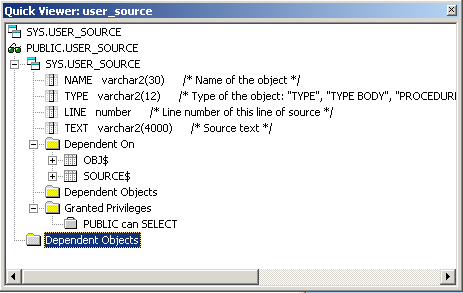
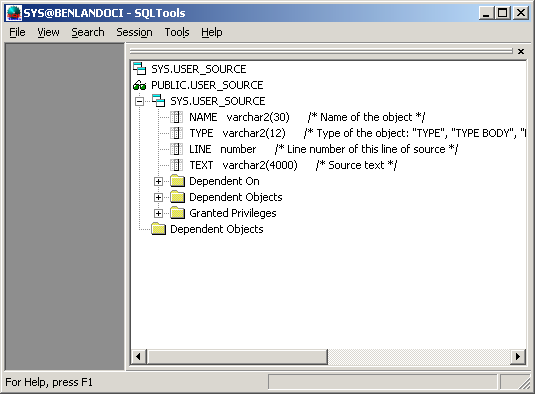

View -> Object Viewer
Previous
Top
Next
Object viewer show all informations about an object which name is under current position of cursor.
Window looks like this :

In view, there is :
object name
object type (given by icon)
shema owner
dependent objects
privileges
comments
This window is dockable to main window :

See
View Menu
,
SQL Toolbar
.